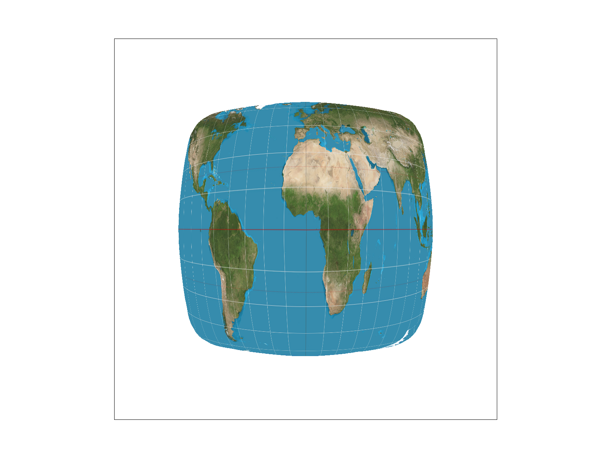
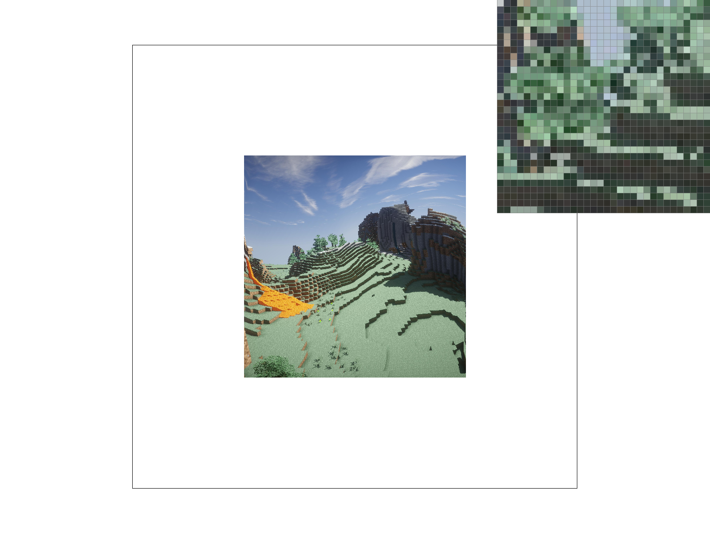
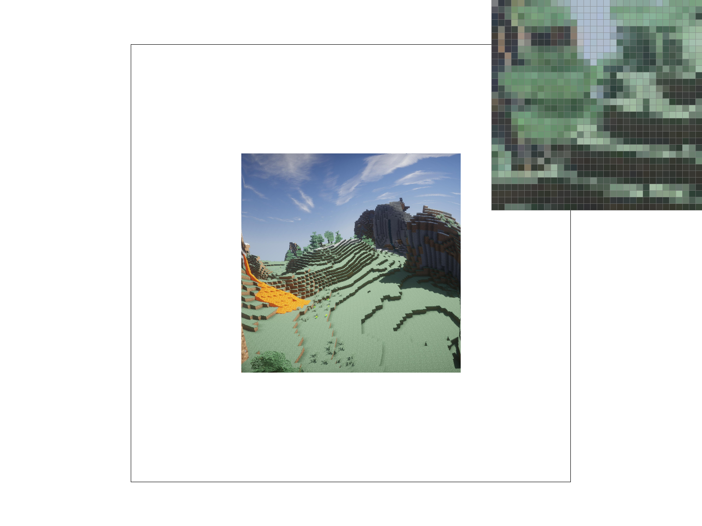

CS184/284A Spring 2025 Homework 1 Write-Up
Link to webpage: https://cal-cs184-student.github.io/hw-webpages-kevin-team-1/hw1/index.html
Link to GitHub repository: https://github.com/cal-cs184-student/sp25-hw1-kevin-team
Overview
In this homework, I built a software rasterizer capable of rendering textured triangles and applying various techniques to tackle aliasing issues. Specifically, I implemented the ability to rasterize single-color and interpolated triangles, supersampling, transforms, and lastly pixel sampling and texture sampling for applying textures to triangles. From this assignment, I gained an understanding of how such techniques affect the resulting image drawn by computers and the tradeoffs they entail. One thing in particular I found interesting was the clever idea to use precomputed mipmaps to help prevent aliasing as part of texture sampling, since I had seen mipmap files as part of video games I had downloaded in the past without knowing what they were for.
Task 1: Drawing Single-Color Triangles
I approach rasterizing triangles by only checking points in the triangle and on one side outside of the triangle (and a 1px line just outside one edge). For each vertical line, my algorithm uses a boolean variable to track whether the triangle has already been detected on that line or not. At the beginning, it is initialized to false since no samples have been done on that line and it likely stays false for some pixels, until it reaches the triangle. Once it reaches the triangle, it is set to true. When the loop detects that it has left the triangle and checks that the boolean is true, it knows that it is on the other side of the triangle and stops sampling for that line. This works because a triangle is a convex shape so a line only intersects it once, and the sampling loop will therefore only hit it consecutively without any breaks.
This algorithm is no worse if not better than one that checks each point in the sampling box because it avoids checking a generally large area on one side of the triangle.
An empirical comparison between the speed of my algorithm and the naive approach that checks every point in the bounding box is below.
Task 2: Antialiasing by Supersampling
My supersampling algorithm divides each pixel into n (sample rate) subpixels uniformly in a grid and calculates the mean r, g, and b values from the n supersamples. I store the supersamples in the single sample_buffer vector of size width*height*sample_buffer.
Supersampling is useful because it allows the consideration of multiple aliases at the same pixel in determining what color to draw.
I modified the rasterization pipeline by modifying the shape rasterization functions to support handling a supersized sample buffer using the coordinates corresponding to the dimension of the screen. I modified the resolve_to_framebuffer function to calculate an average color using n supersamples for each pixel it places in rgb_framebuffer_target.
Observe the zoomed in portion of the corner of the skinny red triangle. It appears broken in the first image and becomes smooother as more samples are gathered. It appears broken without anti-aliasing because the corner is where the thickness of the triangle approaches a size smaller than the pixels, so sampling at a precision that can capture the fine details of the corner becomes difficult. With anti-aliasing, many more samples are taken and factored into each pixel, so the minute details become accounted for in each pixel through their averaging.
Task 3: Transforms
For the transforms task, I implemented the transformation matrices and, to demonstrate their use, created a cubeman. This one is waving and is colored according to the colors of the ROBLOX noob.
For extra credit, my transforms are also used to provide rotation functionality for displaying images. Pressing E rotates everything on-screen 15 degrees to counterclockwise and pressing R rotates the other way.
Task 4: Barycentric coordinates
Barycentric coordinates express a point as a weighted average of the three points that form a triangle. This can be visualized using the triangle below. Letting A, B, and C correspond to the top-left, top-right, and bottom points, redder points correspond to higher a values, greener points correspond to higher b values, and bluer points correspond to higher c values.

Task 5: "Pixel sampling" for texture mapping
Pixel sampling is the process of mapping the color of a pixel on the screen to a pixel on a texture applied to a polygon. I implemented this by calculating the barycentric coordinates of each point on a textured triangle as in Task 4, and converting those back into standard (u,v) coordinates on the texture. The color of a triangle is then determined to be the color of the texture at the mapped point on the texture. Essentially, there is the triangle to be textured on the screen and a triangular region demarcated on the texture itself, and barycentric coordinates allow for mapping points between the two triangles.
There are two pixel sampling methods: nearest and bilinear. Nearest pixel sampling is the naive implementation of the process above, where each pixel's color on screen correpsonds to a single pixel's color on the the texture. Specifically, this pixel on the texture is the one nearest to the calculated point on the texture. The issue with this is that it produces a very coarse look on the final textured triangle. Bilinear sampling tries to resolve this by interpolating the color values of the four nearest pixels in order to produce a smoother look. Two row-wise weighted averages of the colors are calculated and then they are combined into a column-wise weighted average to produce the final interpolated result. Two linear interpretrations, hence the name bilinear.
|
|
|
|

|
|
There seems to be minimal difference between the two 16x sampled images. The type of pixel filtering appears to have more effect at lower sampling rates. 1x bilinear pixel creeates much smoother longitude and latitude lines than 1x nearest but the difference is negligible at 16x. I think that supersampling at a much higher resolution can substitute for the effect of interpolated pixel sampling because supersampling already allows for the capturing of fine details otherwise subject to aliasing.
Task 6: "Level Sampling" with mipmaps for texture mapping
Level sampling is the use of mipmaps, precomputed lower-resolution versions of the same texture, to help prevent the jagged aliasing look. I implemented it by first approximating the derivatives du/dx, dv/dx, du/dy, dv/dy. These approximate derivatives roughly represent how much distance on the texture is squeezed into the space between pixels on the screen. The higher these values are, the more colors there are from the texture that must be represented by a single pixel on the screen. These values are used to evaluate \(max(sqrt(( \frac{du}{dx})^2 + (\frac{dv}{dx})^2), sqrt((\frac{du}{dy})^2 + (\frac{dv}{dy})^2)) \) of which the logarithm base 2 is taken in order to determine how many times the resolution of the texture must be reduced, i.e., the level of the necessary mipmap.
I implemented level sampling with three options: zero, nearest, and linear. Zero always chooses level 0 mipmaps. Nearest calculates the above level and rounds it to the nearest number determine the necessary mipmap level. Linear interpolates between the two mipmap levels that surround the calculated logarithm.
Comparison of techniques: Adjusting pixel sampling and level sampling techniques have minimal effect on speed since it is not a big performance hit to perform the necessary interpolation calculations between pixels and/or levels. Supersampling causes massive performance loss since it is the same as drawing a much larger image of 4x or 16x the size, taking 4x or 16x the time. Pixel sampling doesn't really use much memory and level sampling uses a little more memory to store mipmaps, but supersampling requires storing a large sample buffer which uses a lot of memory. Pixel sampling on its own doesn't do much as shown below, and level sampling is very good for smoothing out jaggedness in the image. Supersampling, simply just sampling at a much higher frequency all across the image, undoubtedly has very high power.
Here's a showcase of some of the combinations of effects:
|

|
|
|

|
|